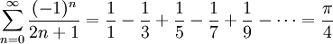

| Name: | _______________________________
K E Y |
| Student ID: | _______________________________ |
In this part of the exam you will be designing and coding a Python program.
The sections of the exam correspond to the sections of a lab writeup.
Total points: 40
Problem Statement:
Leibniz' formula for calculating pi is an infinite series:

Write a function procedure that returns an estimate of pi using
a partial sum with Leibniz' formula. A parameter should be used
to tell the function the maximum value of n to use in the sum.
In the main body of your program, test out your function
using different values of n (different numbers of terms in the partial sum).
(You could also let the user interactively specify the number of terms.)
Measure how close Leibniz' formula gets to the true value of pi.
[8]
Problem Suitability: [2]
Numerical calculations with complex numbers are doable by hand for short,
simple problems, but a computer is designed to do these mathematical
calculations much faster.
Problem Restatement: [3]
- Given:
for leibniz(): a positive integer (num_terms)
for the main program: user inputs a positive integer: highest
value of n to sum to
- To Do:
leibniz(): Calculate partial sum using Leibniz' formula
- Desired Result:
for leibniz(): estimate of pi (float)
for the main program: print difference between Leibniz' estimate
and the true value of pi.
Libraries: [2]
Just the math standard library.
Problem Refinement (natural language): [5]
leibniz(): takes one parameter,
the highest value of n to sum to (one more than the total number of
terms in the partial sum). Calculates each term of Leibniz' series
up to the given value of n, and sums them together. Returns the partial
sum (float).
Main program: User inputs a maximum value for n; this is
one less than the total number of terms to be computed in the partial sum
(the first term counts as n==0). The leibniz() function is run
to compute the partial sum. The result is printed, along with the
difference from the true value of pi.
Data Tables: [3]
Variables:
leibniz(): num_terms (parameter, positive integer)
n (positive integer, counter to keep track of which term we're on)
sum (float, cumulative partial sum -- our estimate of pi)
Main program: n (user input, positive integer)
mypi (float, calculated estimate of pi)
Constants:
math.pi (float, the true value of pi)
Sample I/O: [2]
Let's estimate pi using Leibniz' formula!
How many terms should I use (>=0, enter -1 to quit)? 0
pi = 4.00
error = -0.85407
How many terms should I use (>=0, enter -1 to quit)? 1000
pi = 3.14125916
error = -0.000999
How many terms should I use (>=0, enter -1 to quit)? -1
Bye!
User Manual: [5]
This program uses Leibniz' infinite series to approximate pi, the ratio
of a circle's circumference to its diametre. The infinite sum is
Enter the highest value of n you want the program to compute, and the
program will calculate the partial sum and print it out, along with
the error in the approximation (difference to the actual value of pi).
You must enter a positive integer for n. To exit the program, just
input -1. Enjoy the beauty of math!
Pseudocode: [10]
leibniz(n):
initialize sum at zero
for each index from zero up to n,
calculate the nth term of Lebniz' series
add it to sum
return sum
Main program:
print welcome
Get the desired number of terms from the user
as long as the desired number of terms is positive,
calculate our estimate of pi using leibniz()
print it along with the approximation error
prompt user again for next go-around
Code: [8]
(See separate file: leibniz.py)